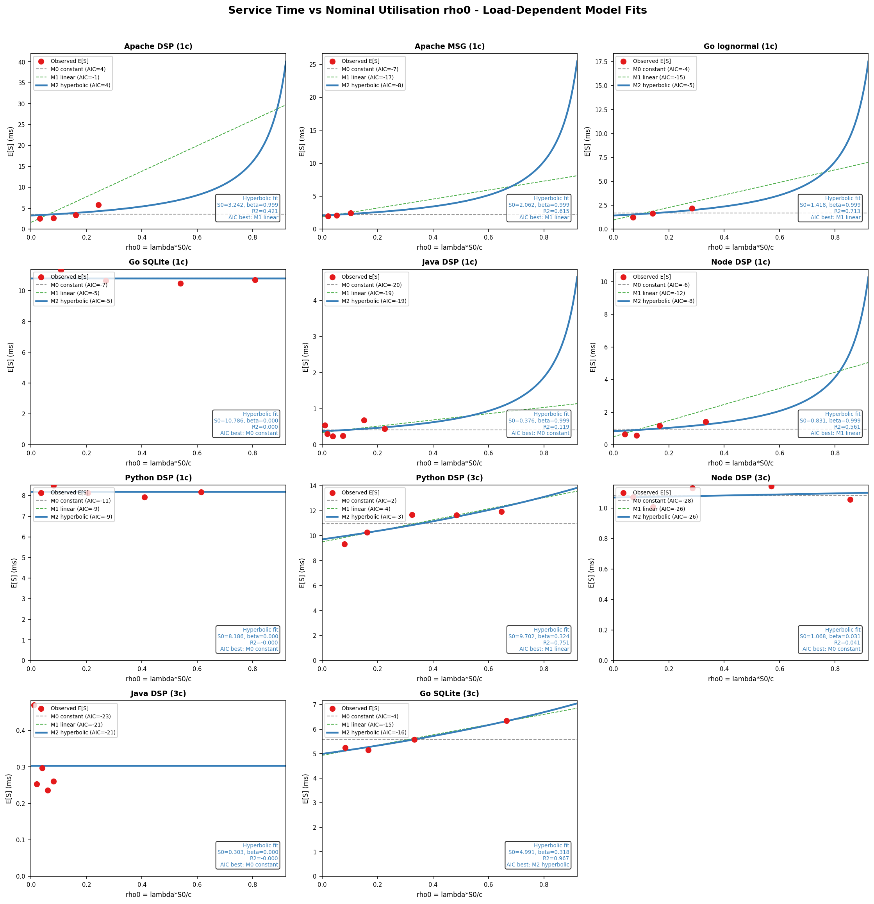
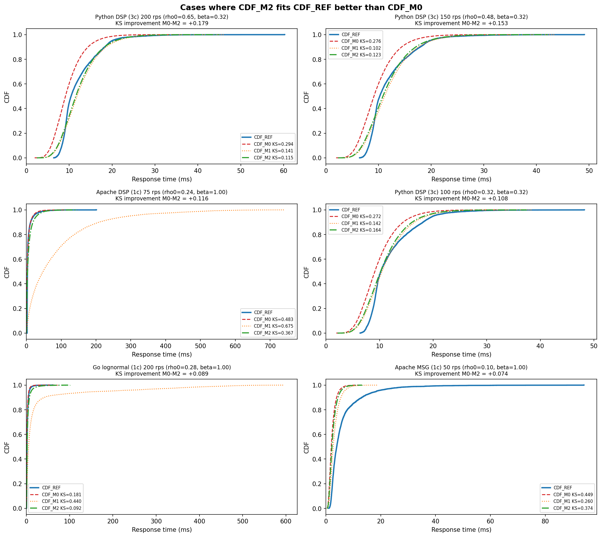
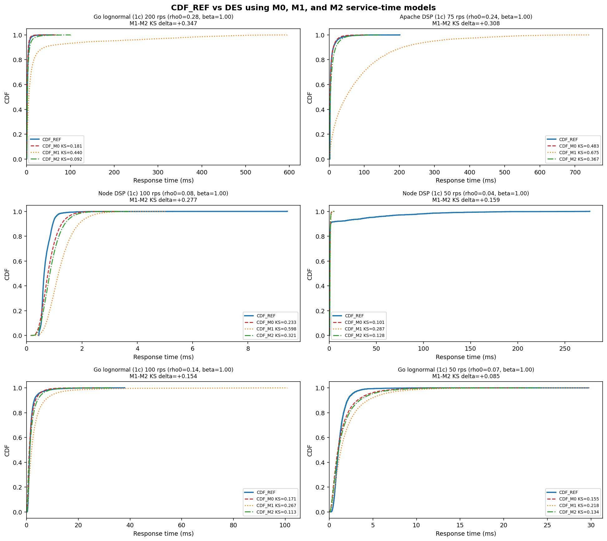
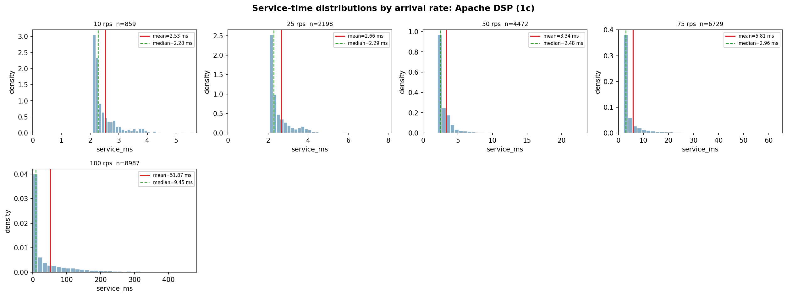
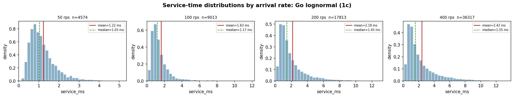

11server configurations
5runtime families
3service-time models
1central pivot
From standard M/G/c validation to a mechanistic service-time model grounded in runtime and OS scheduling behaviour.
Classical M/G/c assumes the distribution of S is fixed.
Given a measured trace of a containerised service, can we predict the response-time distribution at higher load without running the service at that load?
AES decrypt, FIR filter, AES encrypt across Apache, Go, Node, Python, Java.
Go service backed by SQLite/WAL, exposing hidden database-lock behaviour.
Node cluster, Python Gunicorn workers, Java thread pool, Go SQLite WAL.
Poisson arrivals at fixed rates to match the M/G/c arrival assumption.
Per-request arrival, service, queue, response, and status code.
CDF overlays and KS distance for replay, bootstrap, parametric, and M0/M1/M2 modes.
| Area | Delivered | Why it matters |
|---|---|---|
| Servers | 11 Docker configs across Go, Apache/PHP, Node, Python, Java, SQLite | Broad enough to compare runtime/concurrency behaviour |
| DES | M/G/1 and M/G/c replay engines with KS validation | Separates queueing-model mismatch from distribution mismatch |
| Results | Cross-server figures, CDF overlays, fit tables, ANOVA table | Evidence is reproducible and inspectable |
| Docs | Thesis B chapters, README, project map, research journey | The discovery path is now part of the thesis narrative |
KDE, GMM, or learned regressors would model service-time distributions from traces.
The distribution shape was often stable, while the mean moved systematically with utilisation.
The M/G/c constant-service-time assumption is not always valid for real containerised services.
Wall-clock service time can include scheduler delay when request handlers compete for pinned CPU cores.
| Model | Formula | Meaning |
|---|---|---|
| M0 | E[S] = S0 | Classical constant service time |
| M1 | E[S] = S0 + alpha*rho0 | Linear empirical growth |
| M2 | E[S] = S0 / (1 - beta*rho0) | Hyperbolic PS-motivated growth |
The thesis claim is not that M2 always wins. The claim is that M0 fails in important workloads, and M2 gives a mechanistic correction.
Apache DSPGo lognormalNode 1cPython 3c

Figure: service-time fit across servers.
This is the strongest innovation case: M0 fails, so a load-dependent model is needed.




The log transform is used because service-time distributions are right-skewed / approximately log-normal.
| Server | Effect size eta² | Interpretation |
|---|---|---|
| Apache DSP 1c | 0.3074 | strong violation |
| Node DSP 1c | 0.1042 | meaningful |
| Go 1c | 0.0339 | smaller but clear |
| Python DSP 3c | 0.0268 | modest |
Not a shared M/G/3 queue. It is closer to 3 independent M/G/1 queues with splitting.
Application queue feeds a hidden SQLite/WAL lock queue: a tandem system.
JIT warmup changes service time for runtime reasons, not queueing reasons.
Predict unseen arrival rates by solving rho* = lambda E[S](rho*) / c.
Use ARIMA/Prophet for future lambda, then feed DES for proactive scaling.
Priority classes, tandem queue, or retry-feedback loop.
Standard M/G/c works only when service time is exogenous. In real containerised runtimes, service time can itself become load-dependent.
The value of Thesis B is identifying when this happens, why it happens, and how to correct the DES when M0 fails.